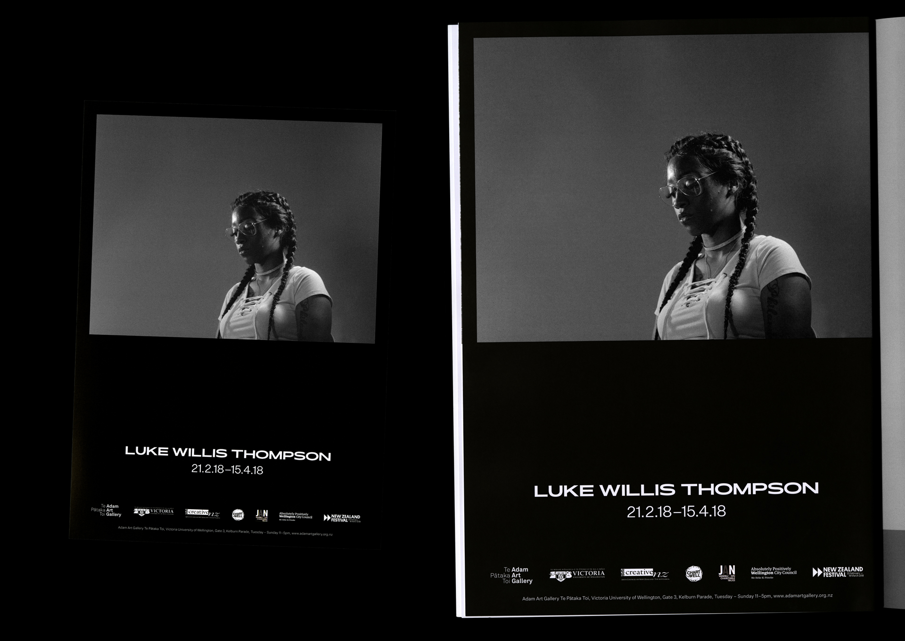
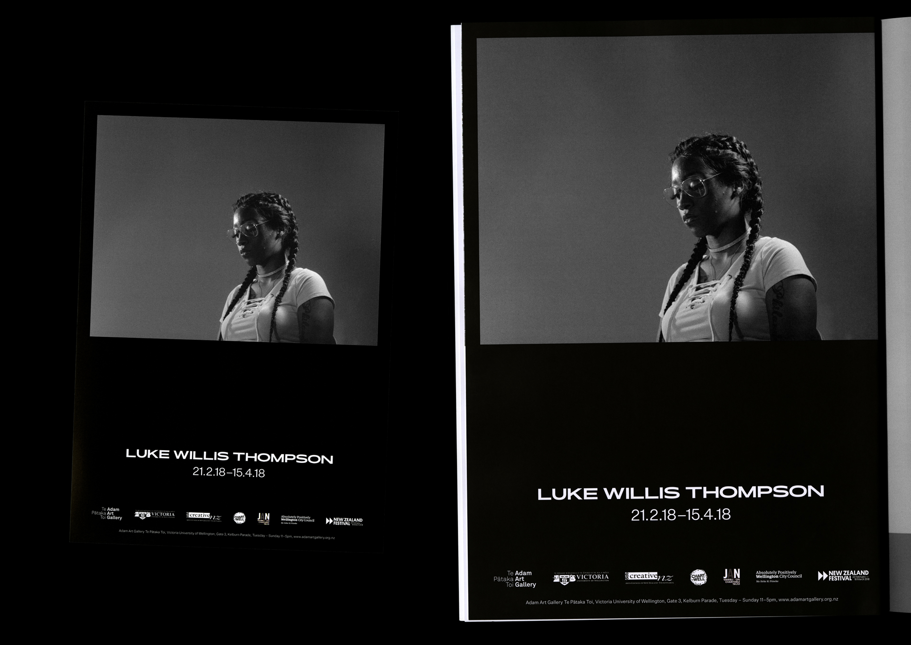
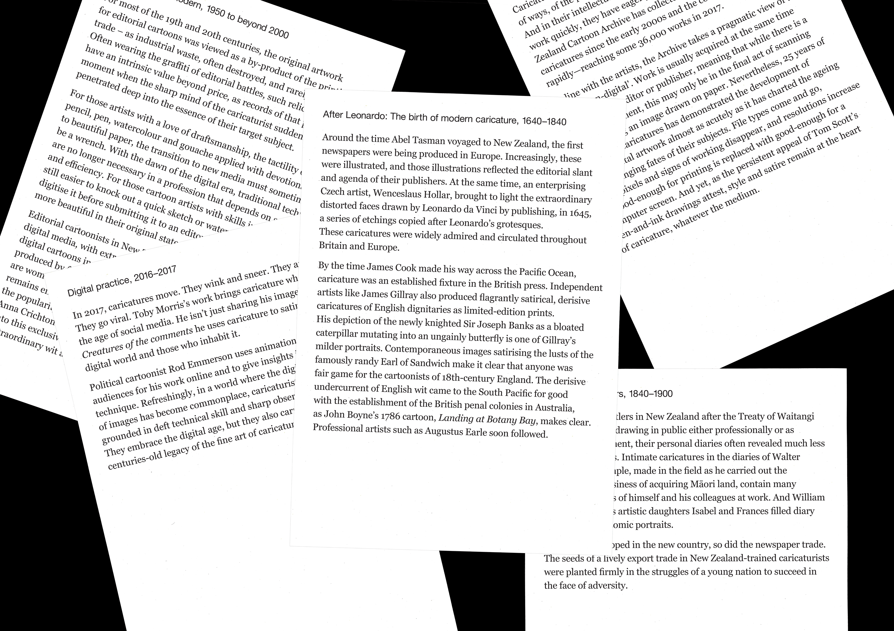
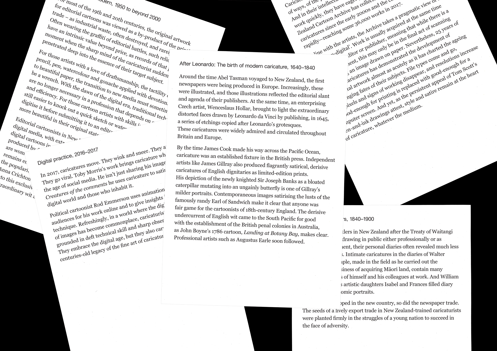

Club 121 December, 2018
Strange Behaviour, 2018
A1 Poster
Illustrations – Iann An
High Definition Dance Music 004, 2018
Tyvek wristbands
SURFACE PRESSURE, 2018

Strange Behaviour, 2018
A1 Poster
Illustrations – Iann An
Millers O'Brien, 2018
Strange Behaviour, 2018
A1 Posters
Illustrations – Iann An
High Definition Dance Music 003, 2018
Fuji Xerox A4 Photocopy
Strange Behaviour, 2018
A1 Poster
Illustrations – Iann An
Patrons' Programme, 2018
Folded DLE brochure for the Adam Art Gallery
 

Luke Willis Thompson, 2018
Exhibition identity for the Adam Art Gallery
High Definition Dance Music 002, 2018
Fuji Xerox A4 Photocopy


Antipocurean Series, 2018
Invitation to an international chef event for Alliance Group Ltd.
High Definition Dance Music 001, 2017
90x35, Black Riso on 80GSM Eco100

Te Hono, 2017
Journal for the 2017 Primary Sector Bootcamp
 


Ludicrous Likenesses: The Fine Art of Caricature, 2017
Exhibition identity for The New Zealand Portrait Gallery, in partnership with Johannes Bay

Book Club 2, 2017
A1 Poster

Górnośląska WIP, 2017 →
Sandblasted onto Absolute Black Granite


Sine of the Times, 2016
An examination, exploration and speculation on contemporary sound system culture
Photographs – Xander Dixon


PRESSURE, 2016 →
Photographs – Marielle de Geest


SILERE alpine origin merino, 2013
Brand collateral for SILERE alpine origin merino
The New Zealand Merino Company Ltd, 2011
Stationery refresh